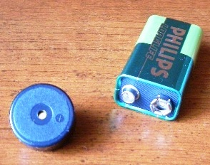
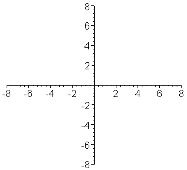
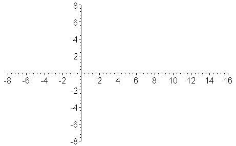

🎬 Deney Videosu

Videoyu izlemek için görsele tıklayın.
Doppler olayının anlaşılması ve hareketli kaynak ile gözlemci durumunda frekans değişiminin incelenmesi.
Buzzer
9V pil

Buzzer elde tutulur ve ileri-geri hareket ettirilir. Dinleyici, sesin yaklaşıldığında tizleştiğini, uzaklaşıldığında ise pesleştiğini gözlemler.
Doppler etkisi, bir dalga kaynağı ile gözlemci arasında bağıl hareket olduğunda gözlenen frekansın değişmesi olayıdır.
Kaynak gözlemciye yaklaşırken dalga boyu küçülür ve frekans artar. Bu nedenle ses daha tiz duyulur.
Kaynak uzaklaşırken dalga boyu büyür ve frekans azalır. Bu nedenle ses daha pes duyulur.

f' → gözlenen frekans
f → kaynak frekansı
v → dalga hızı
vg → gözlemci hızı
vk → kaynak hızı
Kaynak sabit, gözlemci hareketliyse:
Gözlemci kaynağa yaklaşıyorsa (+), uzaklaşıyorsa (-) alınır.
Gözlemci sabit, kaynak hareketliyse:
Kaynak gözlemciye yaklaşıyorsa (-), uzaklaşıyorsa (+) alınır.
Doppler etkisi birçok alanda kullanılır:
Kaynak, ses hızına yaklaştığında dalgalar üst üste binmeye başlar.
Ses hızını aştığında ise şok dalgaları oluşur.

Mach sayısı 1'den büyükse cisim ses hızını aşmıştır.
Videoyu izlemek için görsele tıklayın.